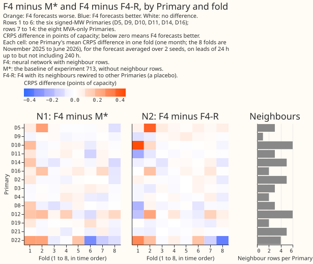
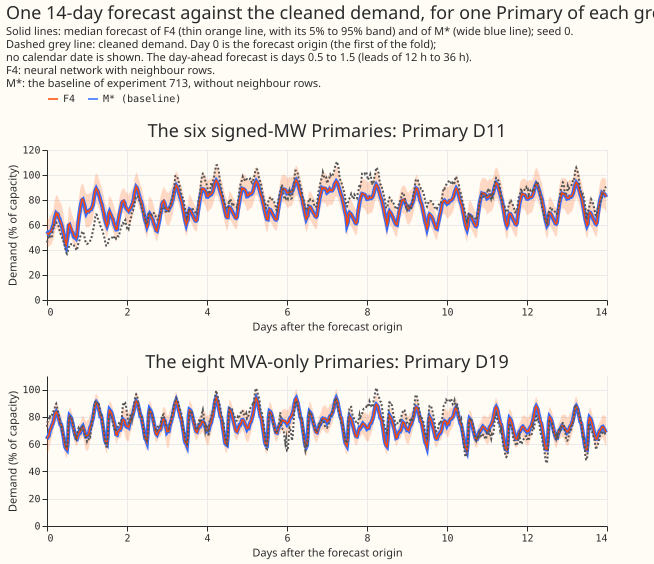
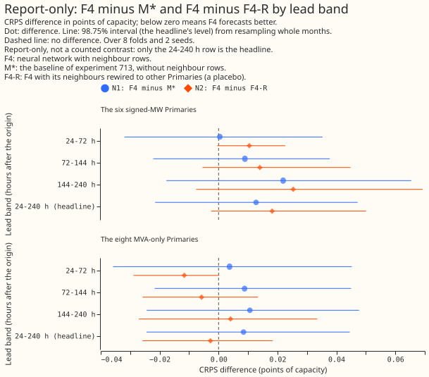

Do the recent days of neighbouring substations help the axial-attention network read a load move?
We ask whether an axial-attention neural network forecasts a Primary substation's demand better when it can also read the last 14 days of each electrical neighbour of that Primary. The network is the axial-attention network of experiment 713, which attends along the half-hours of a day and along the days of a 14-day window of the host Primary's own power. We add a third attention axis over up to six neighbour Primaries, so that each history token of the host can look at the neighbours' power at the same day and half-hour. We compare the result with experiment 713's stored network and with a placebo whose neighbour slots hold Primaries that are not neighbours. The "Result" section below reports the fits. Every later section, apart from the two waiver sections, is the plan as written before the first fit on a real fold, and the plan's refit with no neighbour path (F4-0) and its time-shuffled placebo (F4-T) were not run.
The honest expectation is a tie. Seven earlier experiments on neighbour or graph inputs ended
not supported and one ended refuted. A hand-built neighbour feature in experiment 714 raised the
discrimination of temporary moves from permanent changes by +0.052 AUROC with an interval of −0.014
to +0.130. With 2 seeds the design detects, with 80% power, a CRPS difference of 0.094 points of
capacity at the six signed-MW Primaries and 0.25 points at the eight MVA-only Primaries, and a
smaller difference is likely to read as a tie.
Result
The neighbour rows did not improve the overall forecast: F4 minus M* is +0.0127 and +0.0085
points of capacity, and the verdict is not supported on overall CRPS. The switching question is
untested. F4 is the axial-attention neural network with neighbour rows, and M* is experiment
713's selected network without them. Both 98.75% intervals include zero and lie inside the
pre-registered limits. The contrasts are the mean difference in the continuous ranked probability
score (CRPS), in points of capacity, at leads from 24 h up to but not including 240 h. They cover 8
folds (2025-11 to 2026-06) and seeds 0 and 1, and come from the headline scorer e00715_score.py
headline (score/headline.json, keys N1 and N2). A positive number means that the first arm is
worse.
| Contrast | The six signed-MW Primaries | The eight MVA-only Primaries |
|---|---|---|
| N1, F4 minus M* | +0.0127 (-0.0215 to +0.0472) | +0.0085 (-0.0245 to +0.0445) |
| N2, F4 minus F4-R | +0.0182 (-0.0026 to +0.0501) | -0.0028 (-0.0259 to +0.0183) |
Group reading (key readings) |
no detectable difference | no detectable difference |
The two seeds disagree in sign on N1 in both groups, so the point estimates are within seed
noise. The difference of seed 0 and of seed 1 from M* is -0.0058 and +0.0342 at the six signed-MW
Primaries, and -0.0153 and +0.0474 at the eight MVA-only Primaries (score/headline.json, key
seed_differences). The seed guard fails for N1 in both groups. The seed guard holds for N2 only at
the six signed-MW Primaries (+0.0081 and +0.0275). Both groups read "no detectable difference", and
that reading in both groups is the verdict not supported. The donor guard for supported was not
evaluated, because phase 4 did not run, and the verdict does not depend on it.
About 99% of the neighbour tokens were visible, and 31% to 48% of the rewired slots
held a Primary two links from the host. The visible share of the neighbour tokens is 0.983 to
0.993 for F4 and 0.978 to 0.993 for F4-R across the 8 folds, and the lowest value is F4-R on 2026-05
(0.9781). The share of rewired slots two links from the host is 0.48 for seed 0 and 0.31 for seed 1
(score/headline.json, keys visible_neighbour_share_by_arm_and_fold and
two_link_share_of_the_rewired_slots).
The pre-registered prediction held. N1 lies inside the pre-registered limits of 0.094 points of
capacity at the six signed-MW Primaries and 0.25 points at the eight MVA-only Primaries, and the
interval of N2 includes zero in both groups. The month-block 98.75% interval of N1 excludes a gain
larger than 0.0215 points at the six signed-MW Primaries and 0.0245 points at the eight MVA-only
Primaries (score/headline.json, key N1, field lower). With 2 seeds the interval holds only
the seed noise that the monthly variation carries.
KN8, KN11(b), and KN13: KN13 passed on one fold and seed, and KN8 and KN11(b) never ran.
KN13 checks that the prediction path behind N1 reproduces the stored forecast of M*. It was run
after the result, by e00715_known_answer.py 2025-11 0 --kn13, on fold 2025-11 and seed 0 only:
both forecasts held the same 322,560 keys and the largest absolute difference was 0.0
(/tmp/r715/kn13.out, not committed). The other 15 fold and seed pairs were not checked. KN8
measures the run-to-run difference between a refit and a stored fit, and it needs F4-0, which was
dropped, so the refit-against-stored part of N1 is unmeasured. KN11(b) checks that F4's prediction
path with a stored state of M* reproduces experiment 713's bank forecasts, and it did not run
because phase 4 did not run.
The page shows 2 of the 10 planned plots (7 and 8) and one extra report-only figure, and the other
8 planned plots were not drawn. The attention maps and the null-key share need a forward pass with
attention returned, and the event charts need the injected-world forecasts of phase 4. Plots 7 and 8
and the extra figure need no new fit. They are drawn from the stored forecasts by
e00715_result_plots.py, which passed a code review after two re-checks.
No axis carries a calendar date, and the folds are numbered 1 to 8.
In plot 8, the sign of each Primary's difference changes from fold to fold and from Primary to Primary. The first 2 folds lean towards F4 forecasting worse. In fold 1 the mean difference F4 minus M* is +0.077 points of capacity at the six signed-MW Primaries and +0.082 at the eight MVA-only Primaries, and in fold 2 it is +0.058 and +0.043. The later 6 folds have no common sign.

In plot 7, F4 and M* give nearly the same median forecast for both Primaries shown. Both follow the daily shape of the cleaned demand and miss its day-to-day level in similar places. The example is one forecast origin for 2 Primaries, so it shows what a forecast looks like and does not measure which arm is better. The Primaries were chosen because experiment 722 found no metered generator inside either Primary's service-area polygon and left none unresolved in its fits, and NGED's monitor-direction file flags no reverse power flow. No table records which Primary a metered generator connects to, so the evidence is circumstantial.

The report-only lead-band figure shows no band with an interval that excludes zero for F4 minus M*. Over the headline band of 24 h up to but not including 240 h, F4 minus M* is +0.013 points of capacity at the six signed-MW Primaries (98.75% interval -0.022 to +0.047) and +0.008 at the eight MVA-only Primaries (-0.024 to +0.045). F4 minus F4-R is +0.018 (-0.003 to +0.050) at the six and -0.003 (-0.026 to +0.018) at the eight. These four rows are the counted headline contrasts. The other 3 bands are report-only readings from the same forecasts. The figure shows the interval of F4 minus F4-R at the eight over 24 h to 72 h ending near zero. The script did not store the per-band values, so this is read from the figure and not from a table, and the figure cannot resolve the sign of that end.

Readings listed in the plan were not computed. The report-only contrasts (N1 against the 5 stored seeds of M*, F4 minus the Candidate, and the contrasts by lead band at 95% against 5 seeds, which the figure above at 98.75% and 2 seeds does not replace), the normalised mean absolute error beside each CRPS contrast, cold winter nights, coverage, the avoidable-curtailment cost, the four load-shift scenarios, and the phase 5 read-outs with all neighbour slots masked were not scored. Without the phase 5 read-outs and the null-key share, the page cannot tell whether F4 used its neighbour path or whether the zero-initialised path never moved. The seed disagreement shows that F4 differs from M*, and gradient clipping and GPU nondeterminism would produce such a difference too.
No seed beyond seeds 0 and 1 was run, as the plan requires. F4's plan fixes 2 seeds and adds none after a reading of phase 2, because that would be optional stopping. A staging rule written for experiments 716 to 719 (the futility rule of the queue review, which belongs to F7 and F9 and not to F4's plan) opens seeds 2 to 4 only when a contrast against the baseline has a point estimate below zero in at least one group. The person who ran the fits first applied that rule to F4 and read N2 (-0.0028 at the eight MVA-only Primaries) as meeting it. The manager ruled on 2026-11-24, after the headline was read, that the counted treatment contrast is N1, the contrast against the baseline, and that N2 is the placebo contrast. The manager also pointed out that F4's plan admits no new seed. Every number on this page therefore rests on two seeds.
The pre-registered stop rule says that neighbour rows are closed, and this page reads the rule
narrowly, a reading made after the result. The pre-registered rule says that a verdict of not
supported closes neighbour rows in the axial-attention network on the 16-Primary panel, and that a
retest then needs the fleet-scale adjacency (score/headline.json, key stop_rule). This page
reads the rule as closing only further runs of the overall-CRPS neighbour-row contrasts N1 and N2 on
the 16-Primary panel, and as not closing the switching question. The maintainer approved that
wording after the result was known. The reading is defensible because the hypothesis and the counted
contrasts concern overall CRPS, and neither N1 nor N2 tested the maintainer's question: whether
neighbour rows help the network tell a temporary switching event from a permanent level shift, so
that a network trained with synthetic switching events keeps a forecast of the normal running
arrangement during a switching event. That question is untested.
The earlier interim screen read advance. The screen covered 4 folds (2025-11, 2026-01,
2026-03, and 2026-06). F4 minus M* was +0.0103 at the six signed-MW Primaries and +0.0200 at the
eight MVA-only Primaries, with 2 of 4 folds positive in each group (score/screen.json). Both
differences are below the two stop thresholds.
This experiment's own known-answer gate failed KN6 and KN7, and the maintainer waived both, so the
page says nothing about whether F4 follows a level change. The gate passed KN11(a) and KN12.
KN11(a) checks that the injected worlds equal the cleaned power outside the touched windows, and
KN12 checks that no weather after the forecast origin reaches the neural network. KN6 gave an F4 gap
of 0.0288 between the follow share of a permanent step and of a temporary step, against a
requirement of at least 0.60. KN7 was not evaluated, because the fit of F4 on the world with no
shifts ended at its 150-pass cap (work/known_answers_last_run.json). The maintainer decided the
waiver through the manager on 2026-11-24, after an audit of the failure. The audit found no fault in
the neighbour path. It confirmed two faults in this experiment's own known-answer harness and one
limitation inherited from experiment 713: a training budget of 150 passes with a patience of 8
(experiment 713 later raised its own to 400 and 30), a KN6 window with one permanent step and two
temporary steps, and a shared trunk that reaches a follow share of only 0.019 on a permanent step at
that budget. The KN7 numbers favour F4: F4 minus M was -0.0006 against a limit of +0.005.
The maintainer's note frames the limit. In general, it is hard to discriminate between a temporary step and a permanent step. The note names two hints: what a Primary substation's electrical neighbours do, and the rough shape of the step. The note judges the shape probably less informative.
The injected-world readings S1 to S7, phase 3, and phase 4 were not scored or run. Phase 3 holds the mirror arms F4-W and F4-WR. Phase 4 holds the injected-world predictions.
F4-T and F4-0 were dropped. The time-shuffled placebo (F4-T) and the refit with no neighbour path (F4-0) were report-only arms, and the queue review deferred them until a counted contrast showed a gain. No counted contrast did, and neither arm has a number on this page.
Every fit ended by patience, none reached the 60-pass cap, and none needed the 120-pass rerun.
The table lists the training passes of stage 2 and stage 3 of each fit for seeds 0 and 1
(work/logs/<arm>/<month>_s<seed>_fit.json, key stages).
| Fold | F4 seed 0 | F4 seed 1 | F4-R seed 0 | F4-R seed 1 |
|---|---|---|---|---|
| 2025-11 | 13, 31 | 12, 23 | 13, 31 | 12, 32 |
| 2025-12 | 14, 9 | 13, 21 | 14, 23 | 13, 23 |
| 2026-01 | 12, 12 | 12, 10 | 12, 12 | 11, 10 |
| 2026-02 | 14, 12 | 13, 16 | 14, 12 | 13, 16 |
| 2026-03 | 12, 19 | 14, 14 | 12, 19 | 14, 14 |
| 2026-04 | 17, 14 | 14, 18 | 17, 17 | 16, 18 |
| 2026-05 | 10, 12 | 13, 20 | 11, 12 | 13, 20 |
| 2026-06 | 16, 16 | 14, 23 | 16, 16 | 14, 27 |
The 32 fits (F4 and F4-R, 8 folds, seeds 0 and 1) took 3.9 GPU-process-hours. The total is the
sum of the seconds fields in the same fit logs. The allocated peak in those logs was 5.05 to 5.18
GB with checkpointing of the neighbour path.
One process used at most 8,338 MiB of GPU memory. That is the maximum of the process total in a
30-second nvidia-smi sampler during the fits, reached by F4 on 2026-03 with seed 0. The maintainer
raised the F4 memory limit from 6 GB to 9 GB because the process total exceeded 6 GB.
The tail guard of the headline scorer, the q01 and q99 pinball loss, is within tolerance in both
groups (score/headline.json, key guards).
Why this runs although its start gate was not met
The start gate for this experiment was not met in experiment 714, and the experiment runs because the maintainer asked for it by name. The maintainer's instruction overrides the stop rule. The design that preceded this page (follow-up F4 of the axial-attention line, the "era and extensions" memo) allowed the experiment to run only if the identifiability audit of experiment 714 showed that a partial mirror raises discrimination. Experiment 714 set two start conditions and both failed:
- The host's own rows alone reached an AUROC of 0.630 (interval 0.554 to 0.705) at 7 days after the onset and 0.637 (0.546 to 0.726) at 14 days on its second generator of injected events, below the bar of 0.70.
- Neighbour features added +0.052 (−0.014 to +0.130) at 14 days on events whose mirror lands on a metered neighbour, where the rule needed a lower end of at least +0.05.
After reading that result on 2026-11-20 the maintainer wrote: "Please still run F4. Maybe the MSA
will find additional info." ("MSA" is the axial-attention network; "F4" is this experiment's
working name.) That instruction is the reason the experiment runs. The experiment keeps one stop of
its own: if experiment 713's screen stop rule fires (its selected network is 0.10 to 0.15 points
worse than the Candidate), a neighbour increment on such a network has no route to production, and
the work stops to ask. A final verdict of not supported for experiment 713 that is a tie with the
Candidate does not stop this experiment, because it measures the increment over M* and not over the
Candidate. Experiment 713 is an open draft pull request when this page is written, so its page is
linked as a pull request.
The stop-rule count on neighbour and graph inputs is seven not supported and one refuted.
The table also lists three experiments on neighbour inputs that ended neither way (606, 462, and
714).
| Experiment | What the experiment gave the forecast | Verdict |
|---|---|---|
| 426 | A neighbour's lagged forecast error, on ordinary rows | not supported |
| 440 | Surprise relative to neighbours, on the lag network | not supported (random neighbours did as well) |
| 610 | 27 variants of neighbour summaries in the lag encoder | not supported |
| 651 | A graph layer between the Candidate's encoders and its mixer, on 29 links | not supported (the rewired graph did as well) |
| 672, 675, 676 | Graph networks that pair the donor and the recipient of a transfer | not supported, three times |
| 117 | Physical parameters tied between interconnected substations | refuted |
| 606 | Neighbour summaries (P7, already in the Candidate) | partly supported: follow share 0.119 to 0.035, event-free CRPS 0.068 points worse at the six signed-MW Primaries |
| 462 | Mirrored and unmirrored level changes on the lag network | inconclusive |
| 714 | Hand-built mirror features on injected worlds | Neighbour gain +0.052 (−0.014 to +0.130): inconclusive |
This experiment differs from all of the above in one respect: no experiment in the table above gave the network each neighbour's aligned half-hourly history. Experiment 651's graph layer saw encoder outputs at the target time, and the Candidate's P7 inputs are summaries. Four earlier findings still lower the expectation. Random neighbours matched real neighbours in experiments 440, 462, and 651. The real mirror is weak in this panel (experiment 459 measured a median leak of about a half). Injected worlds mirror each move by construction. Experiment 672 advises a retest only on a fleet-scale adjacency of about 1,161 Primaries, and this experiment departs from that advice on the maintainer's instruction.
Experiment 713's known-answer gate was waived, and this limits the era conclusions
Every F4 fit warm-starts from stage 1 states of experiment 713 that were fitted after the
maintainer waived 713's failed known-answer gate, so no era conclusion of this experiment is backed
by a passing known-answer test. Experiment 713's gate failed two checks at its code hash
e85b84e2ea04b3cb: KA3 (the follow share of arm M on a synthetic world was 0.1418, against a
threshold of 0.75) and KA12 (arm G reached 0.0395, against the threshold of arm M minus 0.05,
which was 0.0918). On 2026-11-23 the maintainer answered "Go ahead with option 1", the option that
waives KA3 for the real folds and discloses the failure. The manager relayed the maintainer's "Go
ahead." to a question that included KA12, so the waiver covers KA3 and KA12. The
decision is quoted from experiment 713's design amendment 4. No threshold, budget, arm, or decision
rule changed in experiment 713.
The waiver changes how three readings of this page are read. The era secondary set (S1 to S7),
every statement about whether the network follows a level shift, and every statement about the stem
arm F4E rest on stage 1 states from the waived gate, so each carries this caveat. The two counted
contrasts N1 and N2 concern forecast skill on real folds, and the waiver does not change how they
are scored. A null result may also come from the slow learning that 713's gate found: a gap near
zero cannot separate "the neighbours carry little" from "the training budget stops before the
read-out learns to use them".
Experiment 715's own known-answer gate failed KN6 and KN7, and the maintainer waived both
Experiment 715's gate passed KN11(a) and KN12 and failed KN6 and KN7, so the screen runs on a
waived known-answer check and not on a passed one. The gate ran alone on the GPU on 2026-11-24 at
code hash e9809f648a885ae1. No threshold and no verdict rule changed. The record in work/known_answers_passed.json
says "waived known-answer check", lists the failed checks and their values, and carries the code
hash and the sha256 of the known-answer script. Each F4 fit prints that sha256 beside the current
file's. The report script prints the waiver of experiment 713 only, so a reader of its output
learns about 715's waiver from this page and from the gate file.
- KN6 (world W3, with temporary steps mirrored at the partner and permanent steps unmirrored)
failed. The gap between F4's follow share of a permanent step and
of a temporary step was 0.0288, against a requirement of at least 0.60. The gap of
F4-Rwas 0.0412 and the gap ofMwas 0.0044. - KN7 (no harm without events) was not evaluated. The fit of F4 on experiment 713's world with no
shifts ended at the 150-pass cap. The mean absolute error of the median was 0.00939 for F4 and
0.01001 for
M, so F4 minusMwas -0.0006, inside the limit of +0.005. A fit that ends at the cap counts as a failed check.
An audit of the failure found no fault in F4's neighbour rows, and three other causes. The audit rebuilt the synthetic world and recounted the events that KN6 scores.
- The harness budget is too small. The synthetic fits train for at most 150 passes with a patience of 8, which is experiment 713's budget before its amendment 3 (400 passes, patience 30). The three fits on world W3 stopped at 42 to 54 passes while their validation loss was still falling.
- KN6's gap rests on three events. The held-out window holds one permanent step and two temporary steps, so the gap cannot separate a working F4 from a broken one.
- The trunk follows almost none of a permanent step. At that budget, arm
Mfollows 0.019 of a permanent step, as in experiment 713's waived check KA3. A gap of 0.60 is unlikely for any F4 built on the same trunk unless the lead-day learning rate is fixed as well.
The maintainer's note on telling a temporary step from a permanent step is in the "Result" section. A gate that fails to show F4 separating the two kinds of step does not show that the neighbour rows are broken, and a passing screen would not show that they carry the hint.
The waiver changes how the era readings are read. The era secondary set (S1 to S7) and every statement about whether F4 follows or ignores a level step rest on a gate that failed KN6 and KN7 and on experiment 713's waived gate. The two counted contrasts N1 and N2 concern forecast skill on real folds, and neither waiver changes how they are scored.
What is compared
Terms used on this page. "The host" is the Primary whose demand a sample forecasts. "A neighbour" is a Primary that NGED's interconnection table lists as interconnected with the host. The six signed-MW Primaries are D5, D9, D10, D11, D14, and D16, and the eight MVA-only Primaries are D2, D3, D4, D8, D12, D19, D21, and D22. "A temporary move" is a load transfer from a donor Primary to a recipient that later reverts, and "a permanent change" is a level change that stays. "The network" always means the axial-attention neural network, and never the electricity network.
Arms.
| Arm | Neighbour slots hold | Stage 3 training world | Folds and seeds | Role |
|---|---|---|---|---|
| M* | Nothing (experiment 713's network) | Experiment 713's | Stored, seeds 0 and 1 of all 8 folds | The no-neighbour control, reused and never refitted |
| F4 | The real neighbours, at the host's own timestamps | Experiment 713's | 8 folds, seeds 0 and 1 | The treatment |
| F4-R | Rewired: Primaries that are not neighbours of the host, at the host's timestamps | Experiment 713's | 8 folds, seeds 0 and 1 | The counted placebo |
| F4-T | The real neighbours, shuffled in time: rows of ages 16 to 379 days | Experiment 713's | 5 folds, seeds 0 and 1 | A report-only placebo |
| F4-W | The real neighbours | The mirror world below | The 4 injected-world folds, seeds 0 and 1 | Secondary: can the network learn the mirror rule? |
| F4-WR | Rewired | The mirror world | The 4 injected-world folds, seeds 0 and 1 | The placebo of F4-W |
| F4-0 | Nothing: F4's code with the neighbour path absent, so no new parameter and no new random draw | Experiment 713's | 5 folds, seeds 0 and 1 | A repeat of M* by F4's copied loop; says how far a refit lands from the stored M* |
| F4E (optional) | The real neighbours, with experiment 713's convolution-stem arm E on the host rows |
Experiment 713's | 5 folds, seeds 0 and 1 | Runs only if the compute condition below holds |
Reference rows, never refitted: the Candidate (experiment 667's stored seeds 0 and 1), the month-by-half-hour climatology, and the manual heuristic and BG2 where stored rows cover the scored keys, all through experiment 713's scorer.
What each placebo isolates. F4 minus F4-R is what electrical adjacency adds over any other Primary's aligned rows. F4-R minus M* is what any other Primary's rows add, together with 36,888 more parameters, and F4-R minus F4-0 is the same reading against the repeat run. F4 minus F4-T is what alignment in time adds over knowing the neighbours' usual level.
F4-R, the rewired placebo. For a host with d neighbours, the d slots hold d Primaries
drawn without replacement from the Primaries that are neither the host nor a neighbour of the host.
D15 and D18 are never drawn for each other. The draw is a fixed function of the host and the rewire
seed, the same in training and at prediction, and the rewire seed equals the seed of the neural
network. Every host has at least 9 eligible Primaries, so the rewired set shares no link with the
real set. F4-R has exactly the parameters of F4, and each slot carries the true identity and
relation of the Primary it holds. A rewired slot often holds a Primary two links from the host,
which biases N2 towards zero: such Primaries make up 23% (D16) to 67% (D12) of a host's eligible
pool, and D10 and D12 have only 9 eligible Primaries for 6 slots. The scorer prints the two-link
share per host and rewire seed.
F4-T, the time-shuffled placebo. Each sample draws 14 ages from 16 to 379 days with experiment 713's placebo draw, and every slot reads its real neighbour at those ages. The neighbours stay aligned with each other and lose their alignment with the host. F4 passes a pool that also needs at least one neighbour with a reading in the block, and the scorer prints the share of visible neighbour tokens for F4, F4-R, and F4-T per fold.
The architecture
The design adds a third attention axis and not a larger flattened matrix. A sample is a tensor
of slots by rows by half-hours. Slot 0 is experiment 713's matrix, unchanged: 15 rows of 48
half-hours, where row 0 is the target row of lead day k and rows 1 to 14 are history rows of ages
2 to 15 days, in 24-hour blocks that start at 12:00 UTC. Slots 1 to 6 each hold one neighbour: 14
rows of 48 half-hours at ages 2 to 15, so the token at slot s, age a, and column j has the
same timestamp as the host's history token at age a and column j. A neighbour slot has no target
row, because no neighbour power exists after the origin. The slots are padded to six and never
packed, so every sample holds 4,752 tokens in memory, of which 3,156 carry readings on average.
A third axis takes 1.73 times the token pairs of experiment 713, against 15.4 times for six neighbours flattened into one matrix. The counts are token pairs per sample.
| Layout | Tokens | Token pairs | Ratio to experiment 713 |
|---|---|---|---|
| Experiment 713: 15 rows | 720 | 90,720 in two blocks | 1.00 |
| One summed neighbour group in the matrix: 29 rows | 1,392 | 214,368 | 2.36 |
| Six neighbour groups in the matrix: 99 rows | 4,752 | 1,397,088 | 15.40 |
| This experiment: third axis with six slots | 4,752 | 156,576 | 1.73 |
A summed neighbour group loses which neighbour mirrors the host, and a sum of MW and MVA series has no clear unit. A matrix of all 16 Primaries would make one sample forecast 16 Primaries, which changes the batch, the loss, and the validation split, so the stored M* could no longer be the control. The neighbour path is one-way: the neighbours inform the host and the host does not change the neighbour tokens, which the write-up states as a limit.
The neighbour set is NGED's interconnection table, through the list that experiment 383 wrote. The table holds 29 undirected links among the 16 series, and experiments 660, 709, and 714 read the same list, so the slots match the links along which the injected worlds mirror their moves. All 16 Primaries have at least one metered neighbour (degrees: 6 at D10 and D12; 5 at D2, D14, and D21; 4 at D15, D18, and D22; 3 at D3, D5, D8, and D11; 2 at D4, D16, and D19; 1 at D9). Of the 16 Primaries, 6 also link to substations without readings, and a move to such a substation has no visible mirror. Six links join Primaries under different bulk supply points, and each neighbour token carries a flag for "same bulk supply point as the host". D15 and D18 share one NGED substation number and are not listed as neighbours of each other, and this plan keeps the table as NGED wrote it, because both injected-event generators keep D15 and D18 out of every event and no scoring world could test the link.
Each neighbour token is a 32-wide sum of five parts. The parts are an identity embedding of the
neighbour (16 × 32), a relation embedding of the link (8 × 32; the index is 4 × same_bsp + 2 ×
host_is_MW + neighbour_is_MW, because a mirror in megawatts is exact only between two signed-MW
Primaries), separate age and time-of-day embeddings, and a power part. The power part holds the
neighbour's power on two scales: over the neighbour's own capacity, standardised with the fold's
target_mean and target_std and clipped at ±5, and the same deviation in megawatts over the
host's scale, so that a transfer of x MW lowers the host's value and raises the neighbour's by the
same amount. A token that is not visible carries a learned vector instead. A neighbour token
carries no weather and no date-time input, because the host's token at the same timestamp already
carries both.
A small neighbour encoder compares each neighbour token with the same half-hour on the neighbour's other 13 days. It is one pre-LayerNorm residual block with dropout 0.1: across-day attention at width 32 over the 14 tokens of one slot and one column (4 heads, a learned bias per head and key row), a 32 → 64 → 32 transition with GELU, and a final LayerNorm. Without it a key could not say "this neighbour stepped up three days ago".
Inside each of the two axial blocks, between the within-day attention and the across-day
attention, every host history token attends over the neighbour tokens of its own age and column.
The query is the host token at width 64 and the keys and values are the neighbour encoder's outputs,
each mapped from 32 to 64, with 4 heads of 16. A learned null key joins the keys, so a host token
with no visible neighbour puts all its weight on the null key, and the host can learn to ignore its
neighbours. The target row has no across-substation attention, and neighbour information reaches it
through the across-day attention of the same block and through the similar-day read-out. The
read-out and the head are experiment 713's, unchanged, so a neighbour can change the read-out
weights and the head's correction and cannot enter the read-out's base directly.
Two details prevent silent failures. First, an attention over keys that are all masked returns
NaN in experiment 713's Attention, and a zero output projection then gives 0 × NaN. Experiment
713 never meets the case because its target row is always a key. This design makes every neighbour
token a key for itself, multiplies the encoder's outputs by the visibility mask before the key and
value projections, and always holds the null key. Second, the output projection W_o of each
across-substation attention has no bias, so a host token whose only key is the null key receives
exactly zero throughout training.
*The count is 36,888 new parameters on the 129,999 of M, 166,887 in total (28% more). The parts
are the neighbour tokens (2,880), the neighbour encoder (8,600), a final LayerNorm (64), and two
across-substation attentions (12,672 each). With arm E's stem on the host rows the total is
169,447. The check script asserts every count against the built module.
Zero initialisation makes F4 loaded with an M state reproduce M up to listed divergences.**
W_o starts at zero with no bias, so the neighbour path adds exactly zero to every host token, and
the experiment starts stages 2 and 3 from the stored stage 1 state of M. An F4 network that loads a
stored M state therefore gives the output of M* exactly, for any neighbour input, and an untrained
F4 equals an untrained M* of the same seed. The fits then diverge from the first optimiser step for
three reasons: gradient clipping runs over all parameters, and W_o has a non-zero gradient at step
1, so clipping rescales the gradients of the shared parameters; any dropout call added to the global
random stream would change the trunk's masks, which the neighbour path avoids by drawing from its own
generators; and the GPU's backward pass of nn.Embedding is not deterministic. Arm F4-0 measures
how far a repeat of M* lands from the stored M*.
Training recipe
This experiment skips stage 1 and runs stages 2 and 3 of experiment 713's recipe, starting from the stored stage 1 state of M of the same fold and seed.* Only five Primaries have readings before 2023, so most neighbour slots would be empty in stage 1, and a shared stage 1 state pairs each F4 fit with the M* fit of the same fold and seed, which should lower the noise of F4 minus M*.
- Stage 2: the target row's weather is the ENS 00Z run of the origin day; origins are daily from 2024-04-01 in the 730 days before the cutoff; the target is cut at the cutoff minus 3.5 h minus 3 days; host and neighbour power are the cleaned power.
- Stage 3: the target is cut at the cutoff minus 3.5 h minus 7 days, with half weight for the 7 days before; the host history reads experiment 581's lag-only shifted power, drawn as experiment 713 draws them; the neighbour rows read the cleaned power without shifts, because the shifts are drawn independently per Primary and would teach the network that a step at a neighbour never relates to the host.
- Optimiser: AdamW, weight decay 1e-3, gradient clipping at 1.0, learning rate 2e-4 for the parameters of M* and 5e-4 for the 36,888 new parameters and for the map of the 7 ENS-spread columns. Batch 256 for every arm (the control was fitted at 256), 300 warm-up steps, at most 60 passes with patience 8, one lead day drawn per pair of Primary and origin day, and a 120-pass rerun of any stage that ends at the cap.
- Neighbour dropout: each filled slot is masked whole with probability 0.15 per sample, drawn
from a NumPy generator of its own keyed on the seed, the stage, and the pass. Dropout inside the
neighbour path uses explicit masks from a dedicated
torch.Generator. The trunk's sample order, lead-day draws, and dropout masks stay those of M*. Host block dropout stays experiment 713's (25.5% of origin days with all host power masked, 4.5% with the newest row masked), and the neighbour slots stay visible on those days, because a telemetry outage is per series. - The neighbour power is an explicit array that every call names. In experiment 713's stage 3 the synthetic source replaces the power of all 16 Primaries, so host and neighbours would read the same shifted array by default. The five modes are: stage 2 (host and neighbours cleaned); stage 3 for F4, F4-R, F4-T, and F4E (host shifted, neighbours cleaned); stage 3 for F4-W and F4-WR (both from the mirror world); prediction on the real panel for every arm, F4-W and F4-WR included (cleaned); prediction on an injected pass (the pass's injected panel). An assertion in each mode compares the assembled neighbour tensor with both candidate arrays.
The mirror world of F4-W and F4-WR teaches the mirror rule that experiment 713's stage 3 cannot. Every synthetic shift in experiment 713's stage 3 sits in the history only and has no mirror, so a network trained on those shifts learns "do not follow a step", whatever the neighbours show. The mirror world keeps experiment 581's schedule of onsets, depths, and signs, and a second random stream assigns each event a kind. 70% of events are temporary moves: the shift stays in the host's history and out of the target, and two thirds of them are mirrored with the opposite sign in megawatts at one listed neighbour, over the same half-hours, with a mirrored share drawn uniformly from 0.2 to 1.0 (one third have no mirror). The mirrored step sits in the neighbour's history only. 30% of events are permanent changes: the shift lasts 60 days, sits in the host's history and target, and has no mirror apart from 1 in 10 that get a chance mirror. About 6.5% of the host's target half-hours then carry a synthetic level change. The mirror world resembles the scoring generator's mirror distribution (shares of 0.9 to 1.0 and 0.3 to 0.7, with one mirror in three hidden), so S2 is an upper reading of what the network would do on real transfers, and the write-up says so beside S2. F4-W is secondary and never enters a counted contrast, because the mirror world changes the targets. The reading that counts for the mirror rule is F4-W minus F4-WR, where both arms share the world.
Compute and fit count
The plan is about 17.7 GPU-process-hours without F4E and 19.7 with it, against a ceiling of 20. One fit (stages 2 and 3 and one prediction) is estimated at 0.2 GPU-process-hours, scaled from experiment 713's own estimate, and phase 0 measures the real figure.
| Phase | Fits | GPU-process-hours |
|---|---|---|
| 0. Timing and memory of one fit; the synthetic-world fits of the known-answer checks | about 8 | 2.0 |
| 1. Screen: F4, F4-R, F4-T × 5 folds (2025-11, 2026-01, 2026-03, 2026-06, 2026-04) × seeds 0 and 1 | 30 | 6.0 |
| 1b. F4-0 × the same 5 folds × seeds 0 and 1 | 10 | 1.0 |
| 2. F4, F4-R × the other 3 folds (2025-12, 2026-02, 2026-05) × seeds 0 and 1 | 12 | 2.4 |
| 3. F4-W, F4-WR × the 4 injected-world folds × seeds 0 and 1 | 16 | 3.2 |
| 4. Injected-world predictions (430,080 forecasts at 2 minutes per 6,944, plus 192 panel loads) | 0 | 2.6 |
| 5. Read-outs with all host history masked and with all neighbour slots masked; attention extraction | 0 | 0.5 |
| Total | 76 | 17.7 |
| 6. Optional: F4E × 5 folds × seeds 0 and 1 | 10 | 2.0 |
Stop and ask the manager before crossing the ceiling of 20 GPU-process-hours. After phase 0 the
implementer multiplies the measured time of one fit by the fit count, and stops before phase 1 if
the projection is above 20. The plan keeps 2.3 GPU-process-hours for 120-pass reruns, and F4E runs
only if the projection after phase 2 still leaves 1.0 GPU-process-hour and experiment 713 reads "the
stem adds after a permanent change" or "gain at D8" for arm E.
Order of cuts: drop F4E; then F4-T on fold 2026-04; then phase 3 with its share of phase 4 (both mirror arms together, because F4-W without F4-WR cannot be read); then run F4-0 on the four screen folds only. Phases 1 and 2 of F4 and F4-R carry the counted readings and are never cut.
Stop rule after phase 1, copied from experiment 713: stop if F4 minus M* on the four screen
folds is above +0.15 in both groups, or above +0.10 in both groups and positive in at least 3 of 4
folds in both groups. The result is then written up from the screen as not supported. Every screen
number is labelled interim.
Slot D (4 cores, up to 12 GB of GPU memory, a host cap of 12 GB per process) runs at most 2 GPU
processes at once, each under 6 GB of GPU memory, until phase 0 has measured the peak. Padded slots
make memory the main risk: the estimate is 6 to 9 GB per process, and gradient checkpointing of the
neighbour encoder and the key and value projections is the first fallback and changes no arithmetic.
The batch size is never changed. Every command runs through the experiment's run.sh
(systemd-run --user --scope with a memory cap, no swap, one BLAS thread), with one process per fit,
atomic writes, and a check-in with the manager before the first fit.
Counted contrasts
Two counted readings, each read at 98.75%. Each contrast is treatment minus reference in CRPS (points of capacity) on leads from 24 h up to but not including 240 h, over the 8 folds, with seeds 0 and 1 of both arms.
| Id | Contrast | Groups | What the contrast answers |
|---|---|---|---|
| N1 | F4 minus M* | the six signed-MW Primaries; the eight MVA-only Primaries | Does the network with neighbour rows beat the network without? |
| N2 | F4 minus F4-R | the six signed-MW Primaries; the eight MVA-only Primaries | Does the gain come from electrical neighbours, and not from any other Primary's rows? |
Intervals and guards. The intervals come from seed-averaged forecasts,
experiment_store.losses_for_bootstrap, and studies.bootstrap.bootstrap_difference_at_level with
whole origin months as blocks and 100,000 resamples. Three guards stand beside each interval: the t
interval on the 8 monthly differences at 98.75% excludes zero on the same side; the contrast has the
same sign for seed 0 alone and for seed 1 alone; and the point estimate is at least twice the
seed-noise standard error at 2 seeds (0.054 at the six signed-MW Primaries and 0.142 at the eight
MVA-only Primaries).
Detectable effect. With 2 seeds per arm the design detects 0.094 points at the six signed-MW Primaries and 0.25 at the eight MVA-only Primaries (0.12 at the eight MVA-only Primaries without fold 2025-11). The planning values come from the Candidate's two stored seeds, which differ by a monthly standard deviation of 0.108 at the six signed-MW Primaries and 0.285 at the eight MVA-only Primaries, so a contrast has standard error 0.027 and 0.071, and the detectable difference is 3.48 standard errors. The scorer prints the noise this experiment actually has, and the decision rule keeps the pre-registered values whatever it prints. The expected gain is smaller than the detectable difference: experiments 699, 709, and 711 could not resolve 0.03 to 0.07 points.
Report-only contrasts, at 95%: N1 against the 5 stored seeds of M* (which lowers the seed-noise standard error at the six signed-MW Primaries from 0.027 to about 0.023 without a fit); F4 minus F4-0 and F4-0 minus M; F4-R minus M; F4 minus F4-T; F4E minus F4; F4 minus the Candidate; every contrast for all 16 Primaries pooled and for D15 with D18; by lead band, by Primary, by the host's count of neighbours, with one Primary left out, and with one month left out; and the normalised MAE of the median beside every CRPS contrast. Experiment 713's four load-shift scenarios (all rows; rows outside events and at least 7 days after an event; rows inside events; the 7 days after an event ends) are scored for the Candidate, M*, F4, and F4-R, with the caveat that NGED's logs may miss events.
Decision rule and verdict. Each group is read on N1, with D the point estimate and [L, U] the 98.75% interval, and τ = 0.03 and δ = 0.094 (the six signed-MW Primaries) or 0.25 (the eight MVA-only Primaries). The group's reading is the first row that holds. Every verdict carries the statement that experiment 713's known-answer gate was waived, so the warm-start states are not backed by a passing known-answer test (see the section on the waiver above); the statement does not change how N1 and N2 are scored.
| Order | Group reading | Condition |
|---|---|---|
| 1 | clear loss | L > +τ, and all three guards hold |
| 2 | loss | L > 0, and all three guards hold |
| 3 | gain | U < 0, D ≤ −τ, and all three guards hold |
| 4 | small gain | U < 0, and the seed guard holds |
| 5 | no detectable difference | L ≤ 0 ≤ U, L > −δ, and U < +δ |
| 6 | cannot tell | any other combination, including an interval that excludes zero while a guard fails |
The experiment's verdict is the first row that holds: refuted for a clear loss in either group;
not supported for a loss in either group or no detectable difference in both; supported for a
gain in both groups, the upper end of N2 below zero in both groups, and every guard below; partly
supported for a gain in one group and no loss in the other, or a gain in both groups with N2's upper
end at or above zero or a failed guard; small gain for a small gain in at least one group with no
gain and no loss; inconclusive otherwise. The guards for supported are that the sign of N1 holds
with each Primary and each month left out in turn, that the q01 and q99 pinball loss of F4 is within
0.05 of M's in each group, that the normalised MAE of the median moves the same way as CRPS, and
that F4 is not worse than M by more than 0.10 at the donor after temporary moves on the second
generator. A gain that F4-R matches is not evidence for electrical neighbours. The write-up then
says that any other Primary's rows did as well, and names a regional residual as the likely source.
A verdict of not supported or refuted closes neighbour rows in the axial-attention network on the
16-Primary panel, and a retest then needs the fleet-scale adjacency.
Secondary contrasts on injected events
Everything in this section is secondary, is read at 95%, and changes no verdict. Every reading of this section also rests on warm-start states from experiment 713's waived known-answer gate, so none is backed by a passing known-answer test. More than 20 readings are planned, so several false positives are likely, and no secondary reading is quoted without that count beside it. Two injected worlds are used: experiment 709's bank (64 passes) and experiment 714's second generator (128 passes, 256 permanent changes and 256 temporary moves, of which 64 have a full mirror, 96 a partial mirror, and 96 a mirror on a substation without readings). Every injected event starts on the first day of the scored month, so no fitted state has seen an injected event.
The ceiling table is printed before any F4 reading, from experiment 714's stored out-of-fold scores. "Gap" is the largest true-positive rate minus false-positive rate along the score, which is the discrimination gap of a forecaster that follows a change fully when a classifier calls the change permanent and not at all otherwise.
| Events of the second generator | Classifier of experiment 714 | AUROC at 7 and 14 days | Gap at 7 and 14 days |
|---|---|---|---|
| All 512 | Ideal (noise-free features) | 0.916, 0.924 | 0.72, 0.77 |
| All 512 | Host rows | 0.630, 0.637 | 0.23, 0.22 |
| All 512 | Host and neighbour rows | 0.666, 0.659 | 0.24, 0.28 |
| 416 with a metered mirror or no mirror by design | Ideal | 1.000, 1.000 | 1.00, 1.00 |
| The same 416 | Host rows | 0.622, 0.639 | 0.20, 0.23 |
| The same 416 | Host and neighbour rows | 0.699, 0.690 | 0.32, 0.33 |
| The same 416 | Host rows and experiment 714's rewired neighbours | 0.612, 0.640 | 0.19, 0.22 |
| 352 with a hidden mirror or no mirror by design | Ideal | 0.776, 0.796 | 0.43, 0.43 |
| The same 352 | Host rows | 0.644, 0.633 | 0.29, 0.22 |
| The same 352 | Host and neighbour rows | 0.612, 0.606 | 0.20, 0.19 |
On the 352 events without a visible mirror, experiment 714's neighbour features lowered the AUROC, so neighbour rows can hurt where no mirror is visible, and S3 is read in both directions.
The follow share of an arm at an event is the arm's median forecast on the injected world minus the same arm's median forecast on the real world, averaged over the target half-hours of lead days 2 to 10, divided by the mean injected change over the host's visible history rows after the onset. A forecaster that carries a level change forward has a follow share of 1. Scoring follows experiment 709's convention: a permanent change is scored against the injected power and a temporary move against the power without the move, so the ideal follow share is 1 after a permanent change and 0 after a temporary move.
| Id | Reading | Holds when |
|---|---|---|
| S1 | Follow-share AUROC of F4 minus that of F4-R ("permanent" is the positive class), on the 416 events with a metered mirror or no mirror, at origins 7 and 14 days after the onset | "The network reads the mirror": at least +0.05 at 14 days with the interval above zero |
| S2 | As S1, F4-W minus F4-WR | "The network can learn the mirror rule": as S1 |
| S3 | As S1 and S2, on the 352 events with a hidden mirror or no mirror | The negative control: the interval includes zero. An interval above zero fires audit trigger 1. An interval below zero is reported as "neighbour rows hurt where the mirror is hidden" |
| S4 | Discrimination gap of M*, F4, F4-R, F4-W, and F4-WR | Printed beside the ceiling table; no threshold |
| S5 | CRPS after permanent changes, origins 7 to 28 days after the onset: F4 minus M*, F4-W minus F4-WR | "Reads a permanent change better": −0.30 or lower, interval below zero |
| S6 | CRPS at the donor after temporary moves: F4 minus M*, F4-W minus F4-WR, and each arm minus the Candidate on the bank | "Less harm after a temporary move": −0.10 or lower, interval below zero |
| S7 | S1 and S4 on experiment 709's bank | Report only: the bank mirrors every metered move in full |
The intervals are percentile bootstraps over whole passes within fold months and then fold months, with 10,000 draws. Origins are 7, 10, 14, and 21 days after the onset, so at least 4 full history rows lie after the onset and the follow share's divisor is defined; an event with no visible reading after the onset at an origin is dropped for every arm, with the count printed. Temporary moves are read in two slices (while the move is in force, and the 7 days after it ends), and a slice with fewer than 60 events is labelled underpowered.
Prediction for the secondary readings. S1 is inside ±0.05, because the counted arms are never shown a mirror in training. S2 lies between 0 and +0.10, because experiment 714's hand-built features gave +0.077 at 7 days and +0.051 at 14 days on the same 416 events against host rows (0.699 against 0.622, and 0.690 against 0.639), and +0.087 and +0.050 against its rewired neighbours. S3 includes zero.
Read-outs that need no fit: all neighbour slots masked at prediction for every F4 arm (how far the forecast moves when the neighbours' telemetry is missing), and all host history masked at prediction for F4 and M* (whether the neighbours' rows let F4 forecast a host without readings).
Known fault in the follow-share divisor
The follow-share function of this experiment averages the injected change from the wrong start,
which inflates the absolute follow shares by about 3% to 9%. The function is visible_change in
e00715_era.py. Its divisor, the mean injected change over the host's visible history rows, starts
at midnight of the onset day (onset_day * 48) instead of at the onset half-hour. The rows between
midnight and the onset carry no injected change, so they pull the divisor down and push every follow
share up.
A fault audit in experiment 728 measured the size of the bias. Its G-H gate, a harness oracle test, feeds the scorer an oracle that follows a flat permanent step exactly. On experiment 728's g2 events, the oracle reads about 1.056 instead of 1.000. By origin day 7, 10, 14, and 21, the readings are 1.093, 1.062, 1.042, and 1.026.
Two kinds of reading in this page are affected. The absolute era follow shares are inflated by about 3% to 9%, with the larger bias at the earlier origins. The gap reading S4 is inflated by about the same proportion, because the gap is a difference of follow shares. The AUROC readings S1 to S3 compare how arms rank permanent against temporary events, so they move little.
The verdicts and the published numbers on this page are left as they were. The fix landed in experiment 728's scorer, which now starts the window at the onset half-hour. The stored forecasts of experiment 715 were not re-scored.
Known-answer checks
Every threshold is fixed now. The known-answer script writes work/known_answers_passed.json,
and the fit script refuses to run a real fold without it. A failed check fires audit trigger 1.
KN1 to KN5, KN9, KN10, and KN11(c) run in the e00715_check_*.py scripts and are not part of the gate
record, so the gate file shows only KN6, KN7, KN11(a), and KN12 at the gated code hash.
| Check | What must hold | Threshold |
|---|---|---|
| KN1, zero initialisation | F4 loaded with an M* state gives M's output on the same batch for real, rewired, and time-shuffled slots; an untrained F4 equals an untrained M of the same seed; every output and gradient is finite on batches with empty, dropped, and no-visible-row slots | Identical on the CPU; at most 1e-6 on the GPU; no NaN |
| KN2, poisoned neighbour power | Setting every neighbour reading after the cut to 1e6, and in a second run to NaN, leaves the assembled inputs unchanged bit for bit, for 64 samples per fold and every test origin, every arm, on a real fold and on one injected pass of each world, also with a random W_o |
Bit-identical; the cap-0 negative control must change the inputs for F4 and F4-R (F4-T is exempt, as its rows are at least 16 days old) |
| KN3, neighbour table | The slots equal the list: 29 undirected links, symmetric, the degrees above; a rewired set shares no Primary with the host's real set, the host, or the D15 and D18 pair, and repeats on a second call | Exact |
| KN4, slot order | Permuting the filled slots leaves the output unchanged, with a random W_o |
At most 1e-5 |
| KN5, masks | With a random W_o: a masked token's value changes no output; a host with no visible neighbour equals the same network with every slot empty; one sample's output does not depend on another sample in the batch; gradients are finite |
Exact; exact; at most 1e-6; no NaN |
| KN6, mirror-only world | Section "The mirror-only world" below | Below |
| KN7, no harm without events | In experiment 713's world with no shifts and four synthetic Primaries in two pairs, F4 minus the no-neighbour network, mean absolute error of the median, both trained from scratch with stage 1 only and at most 150 passes (early stopping, patience 8) | At most +0.005 |
| KN8, repeat of M* | F4-0 on fold 2025-11, seed 0, against the stored M* forecast: the largest absolute difference of the median is printed. KN8 does not gate the fits | At most 1e-3 of capacity, else the F4-0 reading below |
| KN9, host-scale power | The host-scale value equals an independent NumPy computation; a synthetic transfer of fixed megawatts gives equal and opposite changes | 1e-5 |
| KN10, time-shuffle draw | No shuffled row is younger than 16 days, the draw repeats, and no row repeats in a sample | Exact |
| KN11, injected worlds | (a) The injected panels equal the cleaned power outside the touched Primaries and windows. (b) Before phase 4, F4's prediction path with a stored M* state reproduces experiment 713's stored bank forecasts, and is skipped with a statement if they do not exist. (c) An injected change at a Primary that sits in a rewired slot leaves the assembled batch of a rewired arm unchanged (the mode predict_injected_rewired), and moves the batch of the mode predict_injected (negative control) |
1e-6 of capacity; 1e-4 of capacity |
| KN12, weather look-ahead | Experiment 713's gate statement is printed for this experiment | The gate prints PASS |
| KN13, prediction path on a real fold | F4's predict on the stored stage 3 state of M* for fold 2025-11, seed 0, against the stored forecast file |
Same keys; at most 1e-6 of capacity |
The mirror-only world (KN6) is a synthetic world where a neighbour mirror is the only cue. World W3 is experiment 713's world with no shifts, extended with level steps of +0.30 or −0.30 of capacity at random half-hours that together cover about 15% of the history, in four synthetic Primaries that form two neighbour pairs. Half the steps are temporary, last 4 to 12 days, and are mirrored in full with the opposite sign at the pair partner; half are permanent, last 45 days, and have no mirror. From the host's rows alone the two kinds look identical until a temporary step ends. The reading uses origins 3 to 10 days after an onset and target half-hours at least 13 days after it, when every temporary step has ended and every permanent step remains. Each arm trains from scratch (random initial weights, stage 1 only, at most 150 passes with early stopping at patience 8): F4, whose slot holds the pair partner, needs a discrimination gap of at least 0.60; F4-R, whose slot holds a Primary of the other pair, needs an absolute gap of at most 0.15; and the no-neighbour network needs an absolute gap of at most 0.15 (a larger gap means the kind leaks through the host's rows, and the world is wrong). A report-only variant draws the mirrored share from 0.3 to 1.0.
What F4-0 is for, and what follows from KN8. The design expects KN8 to exceed 1e-3 of capacity, because GPU training is not deterministic, so F4-0 is in the plan from the start. N1 is read against the stored M, as pre-registered, and F4 minus F4-0 and F4-0 minus M are reported beside it. If KN8 is above 1e-3 and the size of F4-0 minus M* in a group exceeds half the size of N1 in that group, the write-up says that F4-0 is the control a reader should trust, on 5 folds, and the verdict stays the pre-registered reading of N1.
Leakage and the weather look-ahead
Weather look-ahead statement. This experiment adds no weather for the neighbours: a neighbour token carries no weather and no date-time input. Neighbour power is visible only at a grid index at or below the native origin's grid index minus 48 half-hours, so every neighbour reading was measured at least 27 hours before the contract origin, through the same visibility function as the host's readings (columns 43 to 47 of the newest row of every slot are masked). The weather in the host's history rows is ERA5 and CAMS at each token's own time, which is experiment 713's laboratory shortcut, unchanged: 4 of the 14 history rows could not be built in a live service. The target row reads the ENS 00Z run of the origin day, issued at or before the origin (at least 9 hours before the native origin). Experiment 404's scores above 24 h were voided for a weather look-ahead, so every implementer and reviewer brief must assert that statement, and KN12 prints it.
Other leakage rules.
- Training processes see no scored month. The cleaned power of all 16 Primaries is NaN from the fold month's start, so no neighbour reading from the scored month enters a fit. The neighbour standardisation uses the fold's training region, and capacities are constants.
- Rewired and time-shuffled slots read other Primaries at the same timestamps or the real neighbours at ages 16 to 379 days, all before the origin; KN3 and KN10 check them.
- A validation day is held out for all 16 Primaries at once, so a training sample can read a held-out block of a neighbour as history, as experiment 713's samples read held-out blocks of the host. The overlap touches early stopping only and never a scored forecast.
- The injected worlds are scored by prediction only, with the 27 h rule applied to the injected
neighbour power. On the second generator, a neighbour slot never holds another event's site (the
generator separates every event; the implementer asserts it on every pass). Experiment 709's
bank does not have that property, so every bank reading drops the temporary moves whose donor has
another event's site in a slot, prints the count, and is labelled as carrying the bank's other
cues. On the injected worlds, the rewired arms
F4-RandF4-WRread the cleaned array in every slot, so no rewired slot shows an injected change, and no event is dropped for its rewired slots (a recorded departure, see the section on leakage in the design). The count of events whose rewired set holds a touched Primary is printed beside the readings. - The training world shares no function with the scoring generators: the mirror world is built on experiment 581's schedule, the bank uses experiment 660's generator, and the second generator is experiment 714's.
- Three shortcuts remain, and the write-up states each. The bank mirrors a metered move in full at one neighbour, which flatters a neighbour input. Every injected event starts at a month's start. The scoring convention treats a move still in force as an event the forecast should not follow, although the meter reads the shifted power while the move lasts.
Plots
Every plot uses the D labels of the Primaries and relative days on the time axis, with no calendar
dates and no generator's name, identifier, or series. SVG exports pass through npx svgo@4
--multipass --precision=1 --final-newline.
- Across-substation attention maps: for one sample per panel (an ordinary day, the days around a real logged event, and the days around an injected mirrored move), the weight from the host's history tokens to each neighbour slot and the null key, by age and half-hour, per block.
- Attention from the host's target row to the neighbour rows. The target row does not attend to a neighbour directly, so the figure composes the target token's weight on each host history row with that history token's weight on each neighbour slot, as a heat map of slot by age, for F4 beside F4-R. The caption says that the map is a product of attention weights and not a measure of influence.
- The share of across-substation weight on the null key, by Primary and by fold, for F4, F4-R, and F4-T. A share near 1 says the network ignores its neighbours.
- Mean attention by neighbour for each host, as a 16 × 16 grid beside the 29 links.
- Prediction time series around real load-shift events: at least 12 anonymised events across both metering groups, from 14 days before the event's start to at least 7 days after its end, with the host's power and the forecasts of the Candidate, M*, F4, and F4-R in the top panel, the neighbours' power on the host's scale in the lower panel, and the start and end marked. The two verified transfers are among them. NGED's logs may miss events, so the real-event slices undercount.
- Prediction time series on injected events: one permanent change, one mirrored temporary move, and one temporary move with a hidden mirror, for M*, F4, and F4-W.
- A day-ahead forecast and the full 14-day horizon of one forecast, against what happened, for one Primary of each group.
- Contrasts N1 and N2 by Primary and by fold, with the host's count of neighbours on the axis of a second panel.
- The follow share after permanent changes against the follow share after temporary moves, one point per arm, beside the ideal point (1, 0) and the points of experiment 714's classifiers.
- The forecast with all host history masked, F4 against M*, for one Primary of each group.
Risks
- The most likely result is a tie. The Candidate's neighbour summaries already cut the follow share on injected worlds, random neighbours matched real neighbours three times, and the real mirror leaks about a half to substations without readings. The null-key share (plot 3) says whether the network ignored its neighbours or read them without a gain.
- The design cannot
resolve a gain under 0.094 at the six signed-MW Primaries with 2 seeds. A real gain of 0.03 to
0.07 would end
small gainorinconclusive. No seed is added after a reading of phase 2, because that would be optional stopping. - The neighbour path may stay near zero.
W_ostarts at zero and has only stages 2 and 3, about 10,000 pairs of Primary and origin day, in which to move. A neighbour path that never moved makes F4 equal M* and proves nothing about neighbours. - The counted arms are never taught the mirror rule, so S1 is expected to be near zero, and F4-W carries that question on 4 folds and 2 seeds.
- F4 minus M compares a refit with a stored fit.* KN8 and F4-0 measure the run-to-run difference.
- Skipping stage 1 means the neighbour path never sees data before 2024-04.
- The eight MVA-only Primaries report unsigned apparent power, so a megawatt mirror is approximate at half the panel, and every MVA-only number keeps the label "reactive power assumed zero".
- The rewired slots are not matched on capacity, unit, or distance, and many sit two links from the host, which pushes N2 towards zero.
- F4 can forecast a host without readings from its neighbours, which could account for part of a gain on rows after a telemetry outage; the read-out with all host history masked measures it.
- Experiment 713's caveats carry over: ERA5 history weather is a laboratory shortcut, the read-out's day-type prior is hand-set, and unlogged load shifts sit in the history rows.
- This
experiment depends on experiment 713, which is unmerged. The branch is cut from experiment 713's
branch at commit
3ac110652or later, and the code hash covers every module of experiment 713 that F4 imports and experiment 714's second-generator modules, so a later commit cannot change the experiment silently. Any merge that touches one of the 41 recipe folders changes the hash and refuses the warm start until the diff is read.
Method
These bullets describe the design as written before the first fit; the "Result" section reports what ran.
- Architecture: the host's 15 rows × 48 half-hours of experiment 713 (width 64, two axial blocks) plus up to six neighbour slots of 14 rows × 48 half-hours (width 32), a neighbour encoder with across-day attention, and an across-substation attention with a null key inside each axial block, with output projections initialised to zero and no bias. The read-out, the quantile head, and the rule that the newest power is 27 hours older than the contract origin are experiment 713's.
- Training regime: stages 2 and 3 of experiment 713's recipe from the stored stage 1 state of M*,
monthly refits over 8 folds (2025-11 to 2026-06), seeds 0 and 1, the cleaned power with the
substation_zerohalf-hours dropped, the D15 and D18 rows before 2025-03-01 cut, and the ENS 00Z run for the target row. The budget is 17.7 GPU-process-hours. - Measurement: CRPS in points of capacity on leads from 24 h up to but not including 240 h on experiment 713's row set, scored against the cleaned power; baselines M*, the Candidate, the climatology, the manual heuristic, and BG2; month-block bootstrap intervals; the decision rule above; and the known-answer checks. No valid time on or after 2026-07-01 is scored.
- Standing practices followed: monthly refit; cleaned data everywhere; the short-history cut; every fitted state saved outside git; stored forecasts reused as controls; a screen on a few folds first; tails, cold winter nights, and the curtailment figure through experiment 713's protocol scorer; forecast example plots; load-shift event plots with the unlogged-event caveat. A stated departure: the date-time encoder holds calendar columns, as in experiment 713 and the Candidate, so both sides of every contrast are on equal terms.
Reviews
Reviews done: an Opus design review before this page was written (14 should-fix findings and 9 minor ones, all accepted); Opus code reviews of the fit code, the known-answer code, and the waiver script (five rounds and two waiver rounds); an audit of the failed gate; a numbers review, a prose review, and an Opus result review of this page. Not done: the prose review of the plan sections after the Result section, and an Opus code review of the plots script.
Files
data/ml-experiments/briefs/msa_architecture/f4_design.md,f4_design_review.md, andf4_design_triage.md(read, private): the design, the Opus review, and the triage that this page condenses.ml-experiments/00715-msa-neighbour-row-group-in-the-axial-attention-demand-network/: the code, written and unit-checked on the CPU, then run for phases 0 to 2.e00715_neighbours.pyholds the neighbour table and the slot draws,e00715_model.pythe network,e00715_batch.pythe neighbour tensors and masks,e00715_worlds.pythe mirror world and the synthetic world W3,e00715_arms.py,e00715_train.py, ande00715_fit.pythe arms and the training, ande00715_predict.pythe prediction.e00715_known_answer.pyholds the fit gate,e00715_era.pythe injected worlds and the ceiling table,e00715_score.pythe contrasts,e00715_figures.pyande00715_report.pythe figures and tables, ande00715_weather_lookahead.pycheck KN12. The filese00715_check_*.pyrun the checks that need no fit, andrun.shruns a script under a memory cap and one thread.- Read from experiment 713 (pull request 402): the stored stage 1 and stage 3 states and forecasts of M*, the inputs adapter, the fold statistics, and the scorer.
- Read from experiment 714 (results page):
results/oof_g2_k7.parquetandoof_g2_k14.parquet, and the second generator's passes underworlds/g2/. - Read from experiments 709 and 667: the injected bank (
bank_<month>_p0..p15.pkl) and the Candidate's stored forecasts. Path:data/ml-experiments/. - Neighbour list:
data/ml-experiments/00383-load-shift-xgboost-oracle-first-part-1/work/neighbours_nged.json, from NGED'sPrimary Substation Interconnections.csv. - Written by this experiment: fitted states under
data/ml-experiments/00715-msa-neighbour-row-group-in-the-axial-attention-demand-network/work/and predictions underpredictions/, never committed.